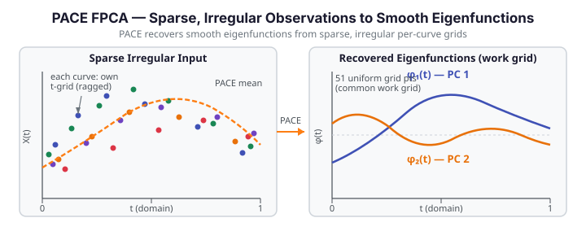

PACE — FPCA for Sparse, Irregular Data¶
PACE (Principal Analysis by Conditional Expectation) extends functional PCA to the realistic setting where each curve is observed at its own sparse, irregular grid — not on a shared dense grid. Clinical longitudinal studies, sensor networks with missed readings, and ecological monitoring data all produce this kind of input. Standard FPCA requires a common grid and breaks when curves have different numbers of observations at different locations. PACE handles it correctly.
The key idea: PACE first estimates the population mean and covariance surface nonparametrically from all available observation pairs, then recovers individual FPC scores via conditional expectation given the sparse observations. The result is a set of smooth eigenfunctions on a common work grid, plus scores and fitted curves for every observation — even those with only a handful of measurement points.

Theory¶
Every square-integrable random function \(X_i(t)\) admits the Karhunen-Loève expansion
where \(\mu(t)\) is the population mean, \(\phi_k(t)\) the \(k\)-th eigenfunction of the covariance operator, and \(\xi_{ik}\) the corresponding score. With dense, regular observations we estimate the covariance directly from the data matrix. With sparse, irregular observations we cannot: different curves are observed at different time points, so the sample covariance matrix is largely missing.
PACE estimates the covariance surface \(C(s,t)\) by local linear smoothing of all cross-product pairs \((X_i(s_j),\, X_i(t_k))\) at distinct time pairs \((s_j, t_k)\) within each curve, pooled across curves. The diagonal (measurement error) is handled separately. Eigen-decomposition of the estimated surface yields \(\hat\phi_k\) and \(\hat\lambda_k\) on the common work grid.
Scores are then recovered by conditional expectation:
where \(\mathbf{y}_i\) is the vector of observed values for curve \(i\), \(\hat\boldsymbol{\mu}_i\) is the mean evaluated at those time points, and \(\boldsymbol{\Sigma}_i = \hat\lambda_k\hat\phi_k\hat\phi_k^\top + \hat\sigma^2 I\) is the marginal covariance at the observed locations.
irreg_fdata_from_lists — building the sparse input handle¶
| Parameter | Type | Description |
|---|---|---|
argvals_list |
list[ndarray (n_i,)] |
List of 1-D arrays — evaluation grid for curve \(i\) (ragged; lengths may differ) |
values_list |
list[ndarray (n_i,)] |
List of 1-D arrays — observed values for curve \(i\) (must match argvals_list[i] in length) |
Returns an opaque PyIrregFdata handle for use with pace_fpca.
2-D numpy arrays are rejected
irreg_fdata_from_lists requires two Python lists of 1-D arrays — one list per curve for the grid and one for the values. Passing a dense 2-D numpy array (n, m) raises a ValueError. Build the lists explicitly before calling the function.
pace_fpca — fitting PACE-FPCA¶
| Parameter | Type | Default | Description |
|---|---|---|---|
data |
PyIrregFdata |
— | Handle from irreg_fdata_from_lists |
ncomp |
int |
3 |
Number of principal components to request |
bandwidth |
float |
0.1 |
Kernel bandwidth for covariance surface smoothing; increase for sparser data (≥ 0.15 recommended for data on [0, 1] with few points per curve) |
sigma2 |
float |
0.01 |
Measurement error variance; increase if observations are noisy |
work_grid |
list[float] \| None |
None |
Evaluation grid for mean and eigenfunctions; None → 51 uniformly spaced points on [0, 1] |
alpha |
float |
0.05 |
Significance level for pointwise confidence bands |
Returns¶
| Key | Shape | Description |
|---|---|---|
mean |
(m,) |
Estimated mean function on the work grid |
eigenvalues |
(ncomp,) |
Eigenvalues \(\hat\lambda_1 \ge \hat\lambda_2 \ge \cdots\) |
eigenfunctions |
(m, ncomp) |
Estimated eigenfunctions; column \(k\) is the \(k\)-th eigenfunction \(\hat\phi_{k+1}(t)\) |
scores |
(n, ncomp) |
Conditional-expectation FPC scores \(\hat\xi_{ik}\) |
fitted |
(n, m) |
Fitted curves \(\hat\mu(t) + \sum_k \hat\xi_{ik}\hat\phi_k(t)\) on the work grid |
fitted_lower |
(n, m) |
Lower pointwise confidence band for each fitted curve |
fitted_upper |
(n, m) |
Upper pointwise confidence band for each fitted curve |
argvals |
(m,) |
Work grid used for all function evaluations |
sigma2 |
float |
Estimated measurement error variance (may differ from the input if re-estimated) |
ncomp |
int |
Actual number of components retained (may be less than requested if the covariance estimate has fewer positive eigenvalues) |
Actual component count
The ncomp value in the returned dict is the actual count of components retained and may be less than the requested ncomp parameter. Always read res["ncomp"] to determine the true length of the eigenvalues array and the number of columns in eigenfunctions and scores.
Example — synthetic sparse irregular data¶
import numpy as np
from docs_fig import fig, render
import fdars.pace_fpca as pf
rng = np.random.default_rng(42)
n = 15 # sparse curves; each has only 5-8 observations
# Build ragged per-curve grids: different number of points, different positions per curve
argvals_list = [np.sort(rng.uniform(0, 1, rng.integers(5, 9))) for _ in range(n)]
values_list = [np.sin(2 * np.pi * av) + rng.normal(0, 0.15, len(av))
for av in argvals_list]
# IMPORTANT: pass Python lists of 1-D arrays — NOT a 2-D numpy array
handle = pf.irreg_fdata_from_lists(argvals_list, values_list)
res = pf.pace_fpca(handle, ncomp=2, bandwidth=0.2, sigma2=0.05)
ef = np.asarray(res["eigenfunctions"]) # shape (m, ncomp) — column k is PC k
argvals_out = np.asarray(res["argvals"]) # common work grid
f, (a0, a1) = fig(1, 2, figsize=(11.0, 3.8))
# Left: scatter sparse observations per curve + PACE mean
for av, vl in zip(argvals_list, values_list):
a0.scatter(av, vl, s=18, color="#3f51b5", alpha=0.45)
a0.plot(argvals_out, np.asarray(res["mean"]), color="#e8710a", lw=2.4, label="PACE mean")
a0.set(title=f"Sparse irregular observations (n={n}, ragged grids)", xlabel="t")
a0.legend(fontsize=9)
# Right: recovered smooth eigenfunctions on common work grid
a1.plot(argvals_out, ef[:, 0], color="#3f51b5", lw=2.4, label="PC 1")
a1.plot(argvals_out, ef[:, 1], color="#e8710a", lw=2.4, label="PC 2")
a1.axhline(0, color="#ced4da", lw=0.8, ls="--")
a1.set(title="PACE eigenfunctions recovered on work grid", xlabel="t")
a1.legend(fontsize=9)
print(render(f))
print(f"actual ncomp={res['ncomp']} scores shape={np.asarray(res['scores']).shape}")
print("FDARS_FENCE_OK")
PACE vs standard FPCA¶
Standard FPCA (fdars.regression.fpca) assumes every curve is observed at the same dense common grid — it operates on a full \(n \times m\) matrix. When curves are sparse or ragged, the matrix cannot be formed, and reg.fpca fails or requires imputation that distorts the covariance structure.
PACE recovers the population mean and covariance surface directly from pooled sparse observation pairs, then extracts scores by conditional expectation — it never requires a complete data matrix. The table below summarises the trade-offs:
| Aspect | reg.fpca (standard) |
pf.pace_fpca (PACE) |
|---|---|---|
| Input | Dense (n, m) matrix (common grid) |
PyIrregFdata handle (ragged grids) |
| Minimum obs. per curve | All \(m\) points | As few as 2–3 per curve |
| Covariance estimation | Direct from data matrix | Local linear smoothing of pooled pairs |
| Score recovery | Truncated KL projection | Conditional expectation (BLUP) |
| Key parameter | n_comp |
ncomp, bandwidth, sigma2 |
When PACE helps vs basis smoothing¶
PACE is the right choice when curves are observed at sparse, irregular, ragged time points and the measurement error is non-negligible. It can fail if:
- Too few points per curve (fewer than 2–3): the conditional-expectation formula becomes ill-conditioned and scores are unreliable.
- Bandwidth too small for the sparsity level: the covariance surface smoother cannot see enough pooled pairs, producing a noisy covariance estimate. A bandwidth around 0.15–0.3 of the domain width is a safe starting point for data on \([0, 1]\) with 5–10 points per curve (see bandwidth guidance in the
pace_fpcaparameters table above).
When curves are dense but observed on non-uniform individual grids, consider basis smoothing (e.g., fdars.smoothing) to interpolate to a common grid first, then run reg.fpca. The PACE kernel smoother adds bandwidth-tuning overhead that is unnecessary if the data is merely irregular rather than sparse.
Example — comparing PACE and standard FPCA on the same data¶
The fence below builds one small synthetic dense dataset, runs reg.fpca on the full matrix, then subsamples each curve to a ragged sparse set and runs pf.pace_fpca. It compares the leading eigenfunction (correlation, up to sign) and leading eigenvalue from each method to show that PACE recovers a consistent estimate from sparse observations.
import numpy as np
from docs_fig import fig, render, fast
import fdars.regression as reg
import fdars.pace_fpca as pf
rng = np.random.default_rng(7)
n, m = 15, 40
t = np.linspace(0, 1, m)
# Dense synthetic dataset (two-component KL model)
phi1 = np.sqrt(2) * np.sin(2 * np.pi * t)
phi2 = np.sqrt(2) * np.cos(2 * np.pi * t)
scores_true = rng.normal(0, 1, (n, 2)) * np.array([[1.5, 0.8]])
X_dense = scores_true[:, 0:1] * phi1 + scores_true[:, 1:2] * phi2
X_dense += rng.normal(0, 0.1, X_dense.shape)
# --- Standard FPCA on the full dense matrix ---
res_fpca = reg.fpca(X_dense, t, n_comp=2)
ef_dense = np.asarray(res_fpca["rotation"]) # (m, 2) — column k is PC k
sv_dense = np.asarray(res_fpca["singular_values"]) # (2,) singular values
# Eigenvalues from standard FPCA (singular_values are sqrt(n*lambda_k))
eig_dense = sv_dense ** 2 / n
# --- PACE-FPCA on the sparse subsampled version ---
# Subsample each curve to 5-8 irregular points
argvals_list = [np.sort(rng.choice(t, size=rng.integers(5, 9), replace=False))
for _ in range(n)]
values_list = [np.interp(av, t, X_dense[i]) + rng.normal(0, 0.1, len(av))
for i, av in enumerate(argvals_list)]
handle = pf.irreg_fdata_from_lists(argvals_list, values_list)
bw = fast(0.25, 0.25)
res_pace = pf.pace_fpca(handle, ncomp=2, bandwidth=bw, sigma2=0.05,
work_grid=list(t))
ef_pace = np.asarray(res_pace["eigenfunctions"]) # (m, ncomp)
eig_pace = np.asarray(res_pace["eigenvalues"]) # (ncomp,)
# Leading eigenfunctions: correlate (up to sign) — both should be close to phi1
ef1_dense = ef_dense[:, 0]
ef1_pace = ef_pace[:, 0]
sign = np.sign(np.dot(ef1_dense, ef1_pace))
corr_pc1 = np.dot(ef1_dense, sign * ef1_pace) / (
np.linalg.norm(ef1_dense) * np.linalg.norm(ef1_pace)
)
f, (a0, a1) = fig(1, 2, figsize=(12.0, 3.8))
a0.plot(t, ef1_dense, color="#3f51b5", lw=2.2, label="Standard FPCA (dense)")
a0.plot(t, sign * ef1_pace, color="#e8710a", lw=2.2, ls="--", label="PACE (sparse)")
a0.set(title=f"PC 1 comparison (corr={corr_pc1:.3f})", xlabel="t",
ylabel="eigenfunction")
a0.legend(fontsize=9)
a1.bar(["PC 1", "PC 2"], eig_dense[:2], color="#3f51b5", alpha=0.7,
label="Standard FPCA")
a1.bar(["PC 1", "PC 2"], eig_pace[:2], color="#e8710a", alpha=0.55,
label="PACE", width=0.4, align="edge")
a1.set(title="Leading eigenvalues", ylabel="eigenvalue")
a1.legend(fontsize=9)
print(render(f))
print(f"Standard FPCA eig1={eig_dense[0]:.3f} eig2={eig_dense[1]:.3f}")
print(f"PACE eig1={eig_pace[0]:.3f} eig2={eig_pace[1]:.3f}")
print(f"PC 1 alignment: corr(dense, pace)={corr_pc1:.3f} (close to ±1 when PACE recovers well)")
print("FDARS_FENCE_OK")
References¶
- Yao, F., Müller, H.-G. & Wang, J.-L. (2005). Functional data analysis for sparse longitudinal data. Journal of the American Statistical Association, 100(470), 577–590.
- Hall, P., Müller, H.-G. & Wang, J.-L. (2006). Properties of principal component methods for functional and longitudinal data analysis. The Annals of Statistics, 34(3), 1493–1517.